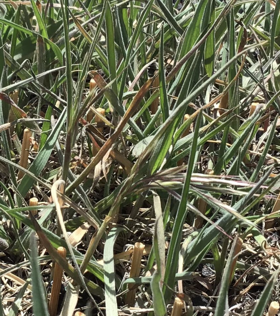
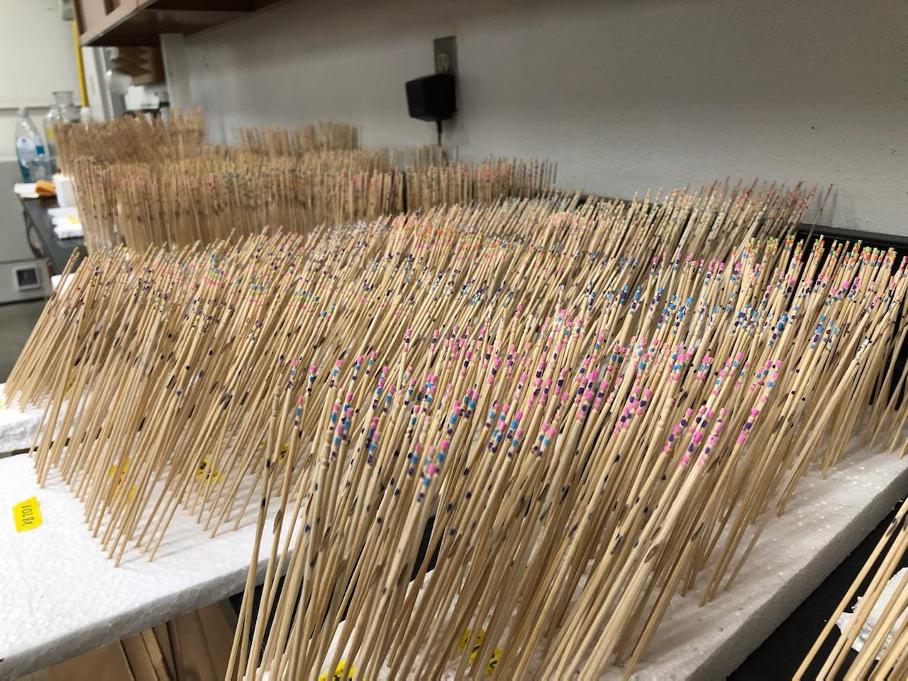
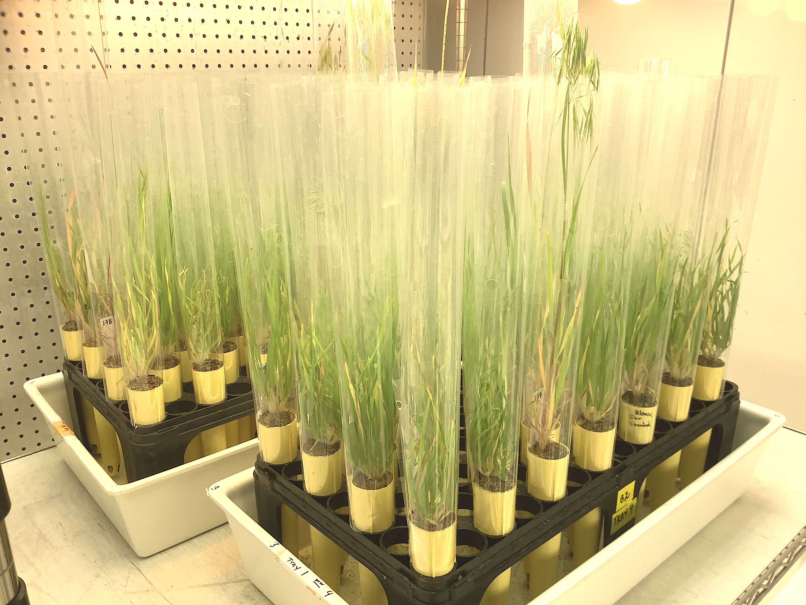

Evolutionary genetics, physiology, & ecology
We study the evolution of ecologically important traits, primarily focusing on plant populations.
Currently we focus on understanding the genetic, physiological, and ecological mechanisms of local adaptation to environment and host-symbiont coevolution. Key study organisms include:
- Arabidopsis thaliana
- Sorghum landraces (traditional varieties)
- Striga hermonthica (a parasite of sorghum)
- Cheatgrass (Bromus tectorum)
- Switchgrass (Panicum virgatum)
For a more complete and detailed overview of our work, see our:
PublicationsPhoto: The lab, May 2022.
Lab news
Coming and going
2 November 2023
Over the last year we have had many comings and goings not updated on this site (unfortunatley). Postdocs Margarita Takou and Aayudh Das moved on to positions at the University of Cologne, and Garuda Therapeutics, respectively. Former lab technician Hailey Bowers moved to the Penn State Materials Research Institute, after helping establish our herbarium genomics work in the new Penn State ancient DNA lab. PI Lasky returned from sabbatical.
Sutherland defends!
3 May 2023
Penn State Bioinformatics & Genomics grad student Jeremy Sutherland defended his PhD! His thesis was on switchgrass genetic variation and its relationship with root associated microbes at multiple sites.
New lab members!
1 November 2022
This semester two people joined the lab.
First, Katherine Blocklove is a Ph.D. student in Agricultural and Environmental Plant Science. She previously received her BS from Brandeis University. She will join the new cohort of students in the Center for Root and Rhizosphere Biology.
Second, Shiran Ben-Zeev is a new postdoc who will work on drought, competition, and belowground interactions in sorghum. He recently received his PhD from the Hebrew University of Jerusalem. Shiran is a BARD postdoctoral fellow.
New lab members!
31 July 2022
Over the summer several people joined the lab.
First, Eleanna Cerda is a Ph.D. student in Plant Biology. She has an NSF Graduate Research Fellowship, and previously received her BA from Mt Holyoke College.
Next, Robin Mailum is a new undergraduate in the lab, majoring in Biology.
Third, Aayudh Das is a new postdoc who will work on adaptation in sorghum landraces. He recently received his PhD from the University of Vermont.
Finally, Joel Masanga is a new postdoc who will work on sorghum-Striga interactions. He recently received his PhD from Kenyatta University.
Sabbatical
7 July 2022
PI Lasky is spending the coming year as a visitor at Scuola Superiore Sant'Anna in Pisa, Italy. He is hosted by Matteo Dell'Acqua.
New technician position
10 May 2022
We are hiring a new research technician in plant genetics. The position is posted here.
Bromecast field experiments
1 May 2022
Our collaborators' BromeCast field experiments are in full swing, with flowering having just initiated. Here is a tiny early flowering warm desert ecotype at the Cheyenne common garden.

New postdoc positions
18 January 2022
We will soon be hiring 2 new postdocs in evolutionary genomics or physiology. These postdocs will work on a Gates Foundation-funded project to find locally-adaptive alleles in sorghum, and to validate these alleles for the improvement of African sorghum. Contact lasky@psu.edu if you are interested.
The first position is in Evolutionary/Ecological Genomics, the second position is in Plant Ecophysiology and Genetics.
Welcome new members!
15 January 2022
We welcome two new lab members. First, Yuxin Luo is a new PhD student in Plant Biology. Yuxin received her undergraduate degree in Ecology from Zhejiang University. Second, Victoria Pizzi is an undergraduate student in Bology at Penn State.
Welcome Margarita Takou!
1 December 2021
Welcome to new postdoc Margarita Takou. Margarita comes to us from the University of Cologne where she received her PhD, and previously received her Master's from the University of Oulu. Margarita will work mainly on projects about the evolution of gene expression.
Postdoc position
28 September 2021
We are hiring another postdoctoral researcher to work on evolutionary genomics, specifically on one or more of the following topics: local adaptation, evolution of gene expression, and climate adaptation. Apply here.
and please send any inquiries to lasky@psu.edu.
Cheatgrass progress
1 September 2021
We have a few hundred cheatgrass genotypes growing in a growth chamber to get at basic life history variation and to get DNA for whole genome resequencing. Also, our BromeCast collaborators are currently sowing thousands of cheatgrass seeds, each glued to a marked toothpick, across four common gardens in Idaho and Wyoming.


Welcome Amanda Penn!
20 April 2021
Welcome to new research technologist Amanda Penn. Amanda comes to us from the PA Bureau of Forestry, and previously received her M.S. from Purdue where she studied tree population and conservation genetics.
Welcome Erica Lawrence!
1 February 2021
Welcome to new postdoctoral researcher Erica Lawrence. Erica recently received her PhD from University of Pennsylvania where she studied the genetics and physiology of vegetative phase change.
First BromeCast paper
15 December 2020
We published the first paper from our collaborative NSF project on genomics, invasion, and population forecasting of Bromus tectorum (cheatgrass). This paper is an overview and perspective on integrating mechanisms (e.g. genetics) into large-scale population forecasts.
Welcome Diana Gamba!
8 September 2020
Welcome to new postdoctoral researcher Diana Gamba. Diana received her PhD from the University of Missouri Saint Louis where she studied ecological mechanisms influencing genetic differentiation among plant populations.
Welcome Chloee McLaughlin!
24 April 2020
We welcome new PhD student Chloee McLaughlin to the lab. She will be co-advised with Ruairidh Sawers.
Crop landrace papers
14 March 2020
We have recently published two papers using crop landraces (traditional local variaties) to understand diversity within and among populations.
Former lab postdoc Emily Bellis led a paper studying how sorghum landraces adapt to the presence of a parasite (PNAS).
We collaborated with Rafal Gutaker & the Purugganan Lab to study how gene flow and adaptation to new environments has shaped the diversity of rice landraces (Nature Plants).
Cover of GCB
1 March 2020
PhD student Victoria DeLeo's paper on phenotypic change in Arabidopsis was on the cover of this month's issue of Global Change Biology.